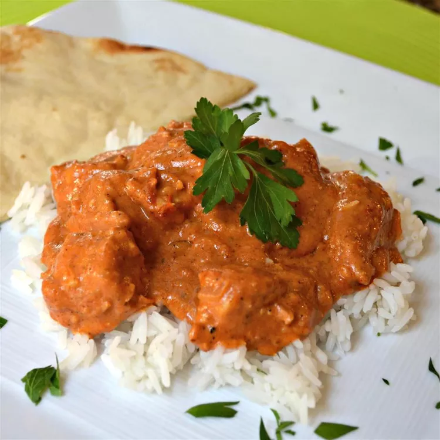

Better Butter Chicken

Description
Butter Chicken, or Murgh Makhani, is a beloved North Indian dish. It features tender chicken in a creamy tomato sauce with aromatic spices. This flavorful dish is a delightful combination of juicy chicken, buttery goodness, and a hint of spice. Enjoy it with naan or rice for a satisfying meal.
Ingredients
- 500 grams boneless chicken, cut into bite-sized pieces
- 1 cup plain yogurt
- 2 tablespoons ginger-garlic paste
- 1 teaspoon red chili powder
- 1/2 teaspoon turmeric powder
- 1 teaspoon garam masala
- 2 tablespoons vegetable oil and butter
- 1 onion, finely chopped
- 2 tomatoes, pureed
- 1/2 cup heavy cream
- Fresh cilantro leaves for garnish
Instructions
- Marinate the Chicken:In a mixing bowl, combine the chicken pieces with yogurt, ginger-garlic paste, red chili powder, turmeric, and salt.
Mix well to ensure the chicken pieces are evenly coated.
Cover the bowl and let the chicken marinate for at least 30 minutes in the refrigerator.
- Prepare the Sauce:Heat oil or ghee in a large skillet or pan over medium heat.
Add chopped onions and sauté until they become translucent.
- Add Spices:Stir in the tomato puree, cumin powder, coriander powder, garam masala, and fenugreek leaves.
Cook the mixture until it thickens and the oil starts to separate from the spices.
- Cook the Chicken:Add the marinated chicken to the sauce and cook until the chicken is no longer pink in the center.
You can add a little water if the sauce gets too thick.
- Finish the Dish:Stir in cream and simmer for a few more minutes until the sauce reaches your desired consistency.
Season with salt and sugar to taste.
- Garnish and Serve:Garnish the butter chicken with fresh cilantro leaves.
Serve hot with naan, rice, or your choice of bread.
Enjoy your homemade butter chicken!
Feel free to adjust the spices and seasonings to suit your taste preferences.